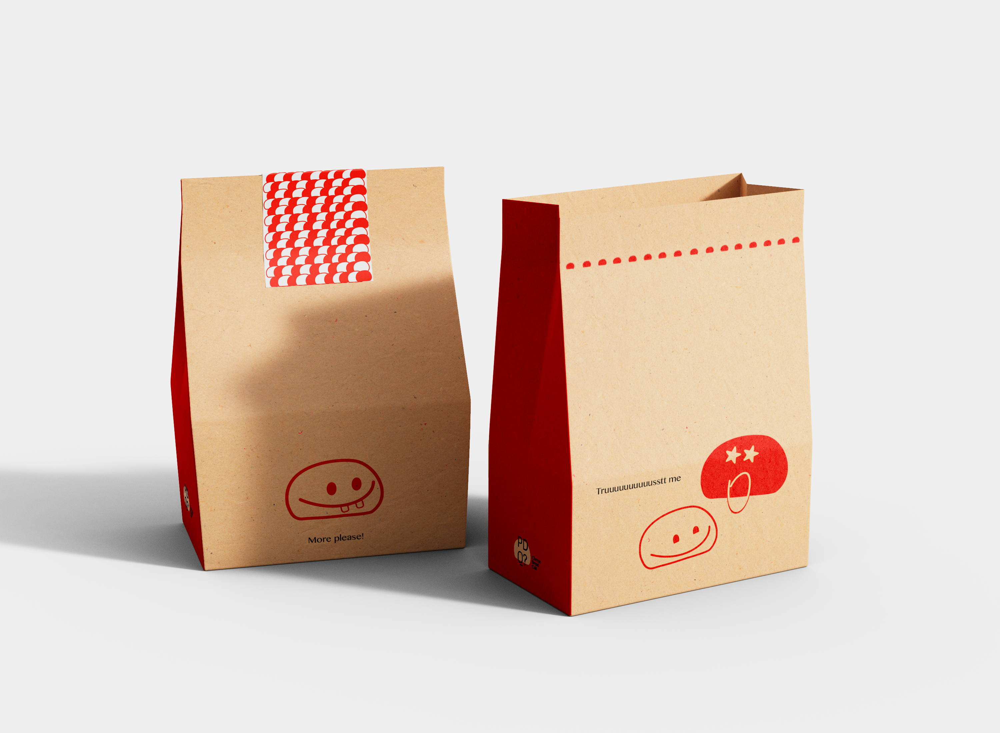
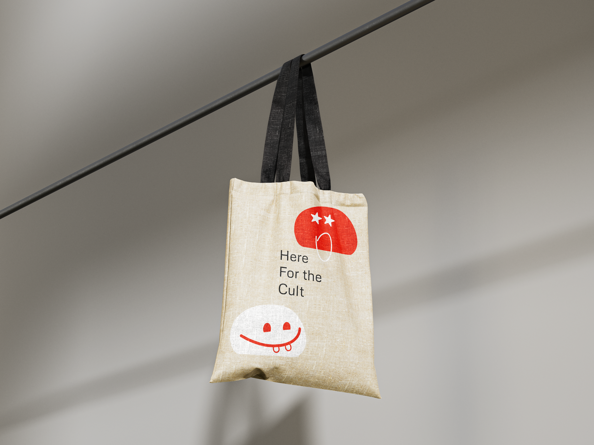

PDQ?
This walking tour highlights some of the best places in New York City to find pão de queijo. The goal is to explore how this popular snack appears across different cafes, bakeries, and restaurants in Manhattan Each stop offers a chance to compare flavors, textures, and styles, while discovering how pão de queijo has become part of New York’s diverse food culture.
Pão de queijo is a small, round Brazilian cheese bread made from tapioca flour, eggs, milk, and cheese — usually Minas cheese or parmesan. It’s naturally gluten-free and has a chewy texture with a crisp outside. Originating in the state of Minas Gerais, it’s a popular snack eaten throughout Brazil, often served warm for breakfast or with coffee.





